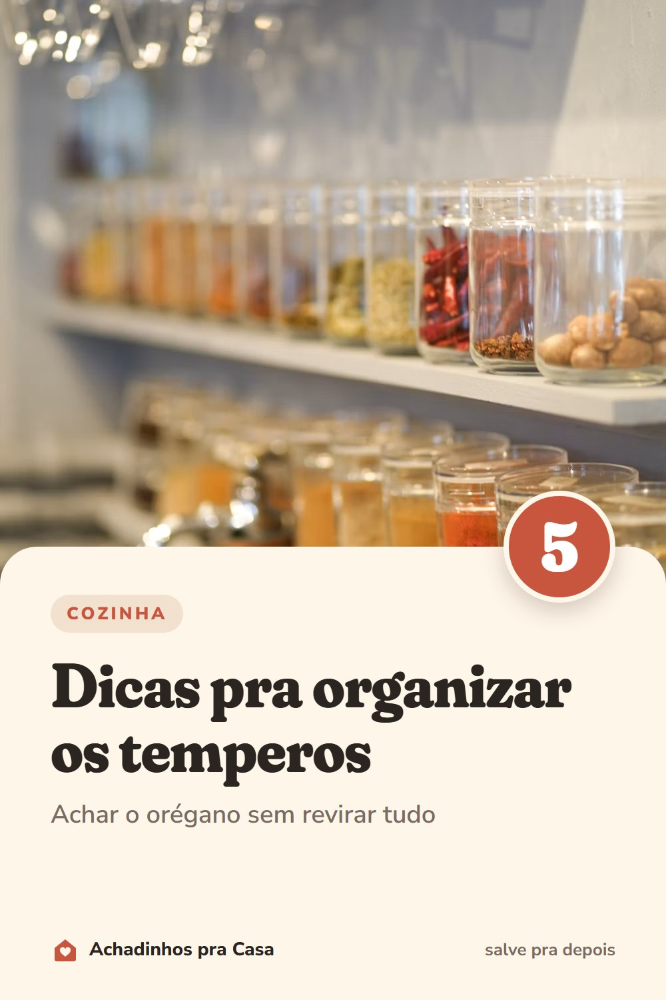

Cozinha
Temperos organizados: 5 dicas pra achar tudo rápido
Achar o orégano sem revirar tudo.
- Potes iguais e etiquetadosMesmo tamanho encaixa melhor e fica bonito.
- Etiqueta na tampa, se ficam na gavetaVocê lê o nome olhando de cima.
- Suporte em degrausOs potes de trás ficam à vista.
- Uma ordem sóAlfabética ou pelos que você mais usa.
- Longe do fogãoCalor e vapor tiram o sabor dos temperos.